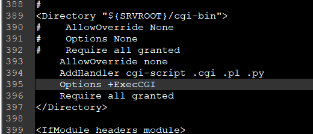
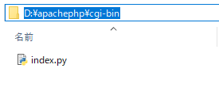
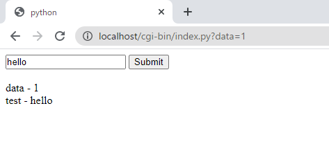
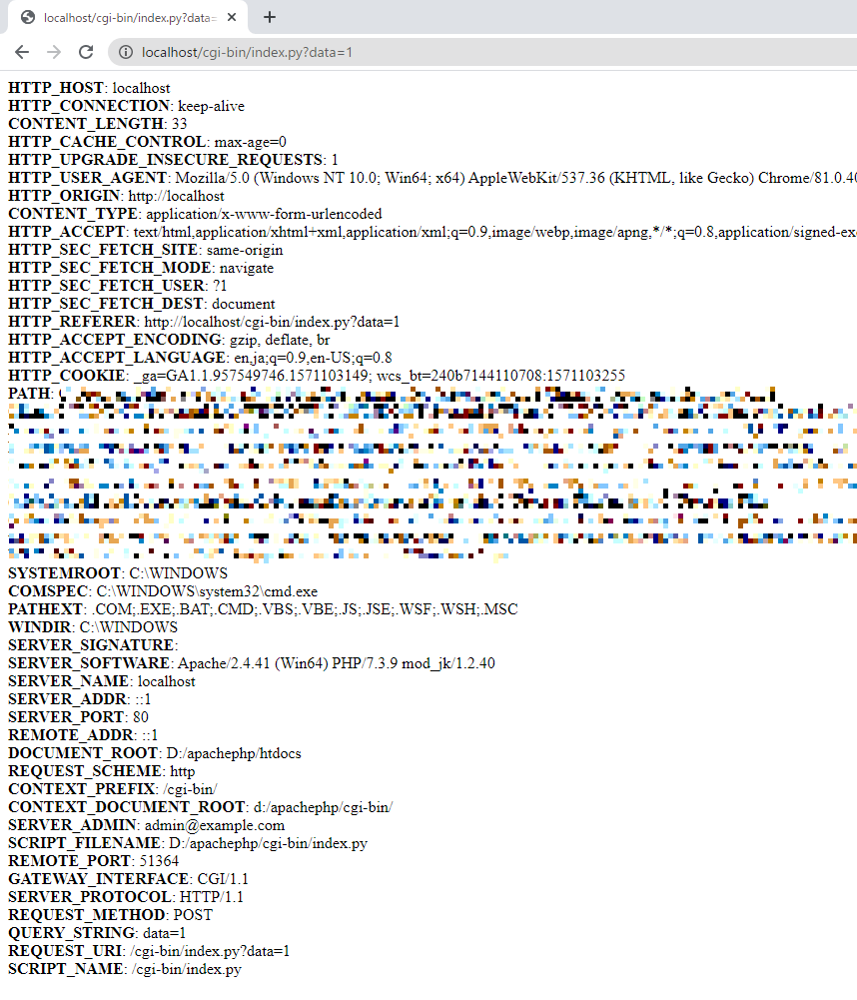

[Python] Apache cgiでPythonを使う方法
こんにちは。明月です。
この投稿はApache cgiでPythonを使う方法に関する説明です。
以前に私がPythonを利用してウェブサーバー(http.server)を構築する方法に関して説明したことがあります。
link - [Python] Web serverを起動する方法(http.server)
でも、私も実際にhttp.serverを利用してウェブサーバーを構築したことはありません。実はhttp.serverでサービスを構築すると思えばちゃんと運用するかの疑問もあるし、良いAPIやオープンソースも多いのでPython(http.server)で構築する必要性を感じられません。
ウェブAPIプラットフォームをPHPに決め、構築する場合にapacheで構築します。 PHP言語も個人的に素晴らしいウェブスクリプト言語だし、よく使うプログラム言語です。
でも、ウェブの流れは様々のユーザが接続するマルチスレッド環境ですが、スクリプト言語のPHP言語だけでコントロールが限界があるし様々なCのDLLを参照して使うことはオブジェクトポイントやリソースを扱うことも簡単ではありません。
その限界はApacheのcgiでpythonを運用してある程度に補完がされます。私の場合、特にPythonは統計やグラフなどのライブラリがすごく多いのでよく使います。なので、PHPの言語の限界を超えてプログラミングを実装する場合はありません。
apacheにphpを設定する方法は以前に説明したことがあるのでご参考をお願します。
link - [PHP] PHP 開発環境設定とEclipse(IDE)の設定
apacheのcgiではperlとpythonを使うことがあります。perlも良いプログラム言語ですが、少し古い言語だし、コミュニティも以前より小さくなったので、最近はよく使わないかと思いもあります。(perl開発者にはすみません。)
そうならapacheのhttpd.confでcgiを設定しなければならないです。
***
<Directory "${SRVROOT}/cgi-bin">
AllowOverride none
AddHandler cgi-script .cgi .pl .py
Options +ExecCGI
Require all granted
</Directory>
***

apacheは基本的にcgiがperlで設定されているのでpythonを追加します。
(参考にapacheが実行するpcにはpythonがインストールしなければならないです。)
そしてapacheフォルダに行ったらcgi-binフォルダにあるのでそこにindex.pyを作成します。

#!D:\anaconda3\python.exe
# 最上端はpythonがインストールされているパスだ。
# -*- coding: UTF-8 -*-
# ファイルのエンコードタイプだ。
import cgi
# cgiはcgiプログラムに使うモジュールだ。
import cgitb
# cgitbはcgiプログラムデバッグに関するモジュールだ。(エラーが発生すればphpみたいにエラーを画面に表示する。)
cgitb.enable()
# パラメータを取得するための関数
# get、post区分なしでデータを持ち込む。
form = cgi.FieldStorage()
# パラメータdataを取得する。
data = form.getvalue('data')
# パラメータのtestを取得する。
test = form.getvalue('test')
# 画面い応答するhtmlドキュメント
html = f"""
<!DOCTYPE html>
<html>
<head><title>python</title></head>
<body>
<form method='post'>
<input type='text' name='test' value='hello'>
<input type='submit'>
</form>
<br />
data - {data} <br />
test - {test} <br />
</body>
</html>
""";
# ヘッダータイプ設定
print("Content-type:text/html")
# httpプロトコールでheaderとbodyの区分は改行なので必ず入れる。なければエラーに発生する。(bodyがないhttpファイルなので)
print('')
# バーディーを出力
print(html)

上の例をみれば私がパラメータでdataとtestの値を出力することにしました。はじめはGET方式で接続すればtestはNoneで出力しますが、テキストボックスにデータを入れてsubmitボタンを押下すると表示されます。
参考 - https://www.tutorialspoint.com/python/python_cgi_programming.htm
os.environを通ってヘッダーの情報を得られます。その中でヘッダー情報によってクッキーを取得できます。
#!D:\anaconda3\python.exe
# 最上端はpythonがインストールされているパスだ。
# -*- coding: UTF-8 -*-
# ファイルのエンコードタイプだ。
import cgi
# cgiはcgiプログラムに使うモジュールだ。
import cgitb
# cgitbはcgiプログラムデバッグに関するモジュールだ。(エラーが発生すればphpみたいにエラーを画面に表示する。)
cgitb.enable()
# os.environを使うためのモジュールだ。
import os
# ヘッダー設定
print("Content-type:text/html")
# httpプロトコールでheaderとbodyの区分は改行なので必ず入れる。なければエラーに発生する。(bodyがないhttpファイルなので)
print('')
# バーディーを出力
print("<html><head><title>python</title></head><body>")
# 情報を出力する。
for param in os.environ.keys():
print ("<b>%20s</b>: %s<br />" % (param, os.environ[param]))
print("</body></html>");

サーバ情報や要請ヘッダー情報が表示されます。
ここまでApache cgiでPythonを使う方法に関する説明でした。
ご不明なところや間違いところがあればコメントしてください。
- [Python] メール(smtplib)を送信する方法2020/07/27 18:38:43
- [Python] HttpConnection(requestsモジュール)でウェブサーバーで接続する方法2020/07/20 14:41:51
- [Python] Excel(openpyxl)を扱う方法2020/07/16 16:40:31
- [Python] ファイル圧縮、解凍(zipfile)する方法2020/07/14 19:14:22
- [Python] Apache cgiでPythonを使う方法2020/07/09 19:58:19
- [Python] Web serverを起動する方法(http.server)2020/07/09 00:13:13
- [Python] WebSocketを使う方法2020/07/07 17:29:18
- [Python] PythonとJavaのソケット通信する方法2020/07/03 18:35:50
- [Python] PythonとC#のソケット通信2020/07/01 19:28:22
- [Python] INI(環境設定ファイル)を扱う方法2020/06/30 18:26:01
- [Python] Jsonを扱う方法2020/06/29 19:18:15
- [Python] XMLファイルを扱う方法2020/06/26 19:18:14
- [C#] 53. Reflection機能を使い方 - Propertyとevent2021/10/19 21:02:58
- [Project design] プログラム制作(コーディング) - 関数作成方法2021/10/19 21:01:32
- [CentOs] ジェンキンス(Jenkins)をインストールする方法2021/10/18 18:28:58
- [Project design] 詳細設計(インターフェース設計と抽象化作業)2021/10/18 18:23:15
- [Project design] 基本設計(画面設計とDB設計)2021/10/17 21:21:11
- [Design pattern] 1-4. デザインパターンの抽象ファクトリーパターン(Abstract factory pattern)2021/10/15 19:31:03
- [Project design] 要件定義(要求事項整理)2021/10/15 19:28:58
- [C#] 52. Reflection機能を使い方 - Variable2021/10/15 19:27:37
- [Project design] プロジェクトを工程(ウォーターフォール vs アジャイル)2021/10/14 18:36:04
- [C#] 51. Reflection機能を使い方 - Method2021/10/14 18:34:21
- [C#] 50. Reflection機能を使い方 - Class2021/10/13 18:34:13
- [C#] 49. Operator(演算子)のオーバーロードを使い方2021/10/12 18:28:42
- [C#] 48. IEnumerableとIEnumerator、そしてyieldキーワード2021/10/11 19:49:33
- [C#] 47. Nugetを使い方(外部ライブラリ)とデータベース(MariaDB(Mysql))を使い方、そしてトランザクション(Transaction)2021/10/08 18:58:57
- [Window] MariaDBをインストールする方法2021/10/08 18:56:05